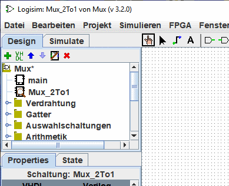
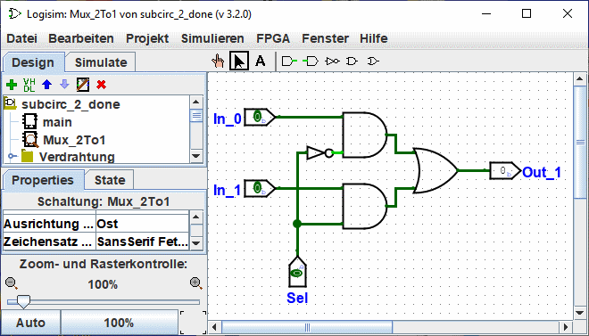

Erstellen von Schaltungen
Jedes Logisim-Projekt ist eigentlich eine Bibliothek von Schaltungen. In seiner einfachsten Form hat jedes Projekt nur einen Schaltkreis (standardmäßig main genannt), aber es ist einfach, weitere hinzuzufügen: Klicken Sie auf die  der kleinen Menüleiste über dem Navigations-Panel oder Rechtsklick auf die Wurzel des Baumes in der Navigationsleiste oder wählen Sie | Projekt |→| Schaltkreis hinzufügen... | und geben Sie dann einen beliebigen Namen für die neue Schaltung ein, die Sie erstellen möchten.
der kleinen Menüleiste über dem Navigations-Panel oder Rechtsklick auf die Wurzel des Baumes in der Navigationsleiste oder wählen Sie | Projekt |→| Schaltkreis hinzufügen... | und geben Sie dann einen beliebigen Namen für die neue Schaltung ein, die Sie erstellen möchten.
Hinweis: Der Name der Schaltkreise muss mit einem Buchstaben (A..Z, a..z) beginnen, er kann die Zeichen (., _) und Zahlen enthalten.
Nehmen wir an, wir wollen einen 2-zu-1-Multiplexer namens Mux_2to1 bauen. Nach dem Hinzufügen der Schaltung wird Logisim so aussehen.

Im Explorer-Fenster sehen Sie nun, dass das Projekt zwei Schaltkreise enthält, main und Mux_2to1. Logisim zeichnet eine Lupe über das Symbol des aktuell betrachteten Schaltkreises. der aktuelle Schaltkreisname erscheint auch in der Titelzeile des Fensters.
Nachdem wir die Schaltung so bearbeitet haben, dass sie wie ein Mux_2to1 aussieht, könnten wir mit der folgenden Schaltung enden.

Nächste: Verwendung von Teilschaltungen.